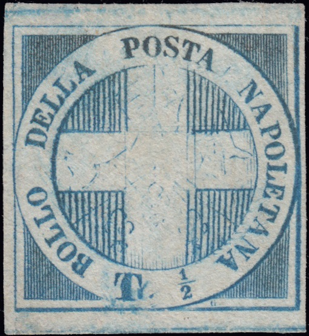
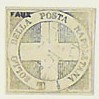
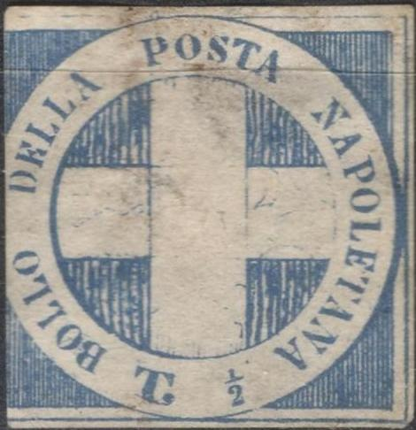

Genuine stamps
Return To Catalogue - Naples 1860 issue, blue cross
Note: on my website many of the
pictures can not be seen! They are of course present in the
catalogue;
contact me if you want to purchase the catalogue.

Genuine stamps
The above forgery looks exactly like the ones in 'The Fournier album of philatelic forgeries'. There seems to be an "x" behind the "T". All the letters are in the wrong position. Fournier offers this stamp (under 'Deux Siciles Naples') in his 1914 pricelist. It can be found with the cancel "ANNULATO" in a box. Also with the above shown "ASSIC..." (ASSICURATA?) cancel. The stamp with "FAUX" on it is most likely from the Fournier Album. The Serrane guide says that Fournier made 3 cliches of this stamp, in the second cliche he added a dot in the center of the cross. Also a stamp with a "TORINO 19 MAGG 61 12 M" cancel that is supposed to have been used by the stamp forger Oneglia (see page 33 of 'Philatelic Forgers, their Lives and Works' by V.E.Tyler).

Page from a 'Fournier Album of Philatelic Forgeries' with a block
of these forgeries and an example of the 'ANNULATO' cancel.

Other forgeries from a Fournier Album.


 
I've been told that this forgery was made by Fournier, but I'm
not certain if this information is correct. It doesn't resemble
the forgery above. There is a dot behind the "T"
(actually the remnants of the "G"?).


Modern forgeries (1980's) made by Peter Winter, even on forged
letters.


Sperati forgery 'Reproduction A', obtained for Richard Frajola's
website; www.seymourfamily.com/rfrajola/Sperati/speratiindex.htm.
This is one of his 'constant cancel' forgeries; the cancel '11
APRIL 1861' is always placed in the same location. Next to it a
reproduction of this forged cancel

Sperati forgery, 'Reproduction B'; this forgery has a line below
the "P" of "POSTA", the "T" of this
word is defective. I've seen this forgery pasted on a piece of
paper with the Jean de Sperati signature:
Sperati forgery 'Reproduction B' on piece of paper with forged
'PARTENZA DA NAPOLI 7 GIU 1861' cancel. Sperati also forged this
cancel with dates '1 FEB', '2 FEB', '17 FEB', '11 APR', '22 MAG',
'25 LUG' and '25 OTT.'.


The forged 'PARTENZA DI NAPOLI' cancels as used by Sperati with
the different dates.


Forged 'ANNULLATO' cancels as used by Sperati.


Deceptive Sperati forgery, type C. There is a small white spot in
the outer right frameline at the level of the "P" of
"NAPOLETANA".


I've been told that these are other Sperati forgeries.
Sperati used a large number of forged cancels on this issue: 8 towncancels (see information above), 'ANNULATO' in a box and 5 different wavy 'Annullato' cancels.

{kind=link}
{kind=link}
{kind=link}